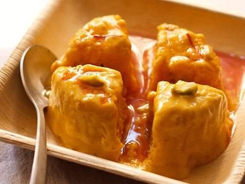
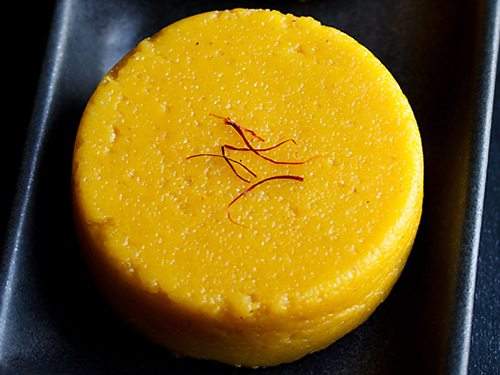
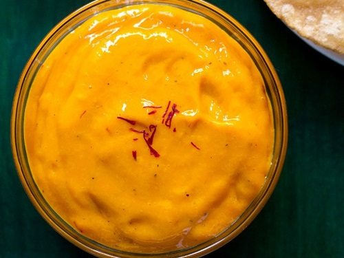

Mango Kulfi

Ingredients:
- 2.5 cups cow's milk or almond milk
- 2.5 cups mango puree - approx 3 to 4 large sized alphonso mangoes can be used
- ¼ or ½ cup sugar - depends on the sweetness of the mangoes. so adjust accordingly
- 4 to 5 green cardamom crushed or ¼ teaspoon cardamom powder
- 1 pinch of saffron
- 12 to 15 unsalted pistachois - blanched or soaked, peeled and sliced. keep some for garnishing
- 2 to 3 tablespoon almond paste (almond meal) or khoya (mawa or dried evaporated milk solids) - optional
- 2.5 or 3 tablespoon rice flour or 2 tablespoon corn flour dissolved in 3 tablespoon regular milk or almond milk
Instructions:
- Take saffron and almond milk in a pan.
- Heat on a low flame. just let the almond milk come to a gentle heat. don't boil the almond milk.
- If using cow's milk then simmer on a low flame for about 15 to 18 mins.
- Add sugar. Stir till the sugar has dissolved.
- Dissolve the rice flour in 3 tbsp milk.
- Add this rice flour paste to the milk. Keep on stirring so that no lumps are formed.
- Cook on a low flame. Stir in between.
- Continue to cook till the mixture thickens. Switch off the flame.
- Add the almond paste/powder/meal or khoya/evaporated milk. Stir and let the mixture cool.
- Add the mango puree, chopped pistachio slices and mix well.
- Pour mango kulfi into serving bowls or kulfi moulds. Freeze for 8-10 hours.
- Serve mango kulfi cold and sliced with topped with saffron, sliced pistachios, cardamom powder or falooda along with rose syrup.
Mango Kesari

Ingredients:
For Mango Puree
- 1 medium to large sized alphonso mangoes or ¾ cup chopped mangoe
- ⅓ cup sugar, or add as required
- 1 pinch saffron
- seeds from 3 green cardamoms
Other ingredients for Mango Kesari
- 3 tablespoons ghee or any neutral flavored oil
- ½ cup rava or sooji (cream of wheat)
- 12 to 14 cashews
- ½ tablespoon raisins
- 1.5 cups water
Instructions:
Making Mango Puree for Mango Kesari
- Take 1 medium to large sized alphonso mango or any variety of mango.
- Chop it and add the mango pieces in a blender or mixer jar.
- You will need about¾ cup of chopped mangoes.
- Then add ⅓ cup sugar, 1 pinch saffron and seeds from 3 green cardamoms.
- Blend till smooth. Keep aside.
Making Mango Kesari
- Now in a sauce pan, take 1.5 cups water and begin to heat it.
- In another pan or kadai, take 3 tablespoons ghee and let it melt.
- Keep the flame to low or medium-low and then add ½ cup fine rava (sooji).
- Also add 12 to 14 cashews.
- Roast the sooji in the ghee on a low to medium-low flame stirring often.
- The sooji has to be roasted well and should become aromatic. This is an important step and if the sooji is not roasted well, the halwa will become sticky or lumpy.
- By the time the rava is roasted, the cashews will also become light golden.
- Once the rava is roasted well then it will become aromatic and its color will also change. The rava grains start to look dry, separate and crisp. The ghee will also start separating.
- Meantime the water will also start boiling.
- Once the rava is roasted, then add the mango puree to it and mix well.
- Add the boiling hot water in a slow stream. Be careful as the mixture splutters.
- As soon as you add the hot water, quickly begin to stir the halwa, so that lumps are not formed. For best results use a wired whisk while stirring.
- You will see that the sooji absorbs water and the halwa begin to thicken.
- After stirring, cover the pan with a lid and on a low flame simmer the halwa for 2 to 3 minutes.
- All the water will be absorbed and the kesari will be done. If you want you can add some more ghee at this step.
- Serve mango rava kesari hot or warm or at room temperature. You can also take the mango kesari in small bowls or muffin cups.
- Once they become warm or cool, then remove them. Refrigerate the remaining mango kesari.
Aamras

Ingredients:
- 400 grams mangoes or 2 large alphonso or 3 to 4 kesar mangoes
- ½ teaspoon cardamom powder
- 1 pinch saffron strands (kesar), optional
- sugar or powdered jaggery (gur) - optional
- ¼ teaspoon dry ginger powder (saunth) - optional
- water or milk as required - optional
Instructions:
- Rinse the alphonso mangoes. Then peel and chop them.
- In a blender, add the chopped mango pieces and blend.
- Add cardamom powder and crushed saffron strands.
- Stir very well. To thin down the aamras, you can add some sugar or some milk or water.
- Pour in small bowls and chill in the refrigerator.
- Serve aamras with puri. You can also serve with chapatis.
- You could even add your choice of dry fruits to the aamras. If adding cashew-nuts, fry the cashew-nuts till golden brown and then mix it with the aam ras.